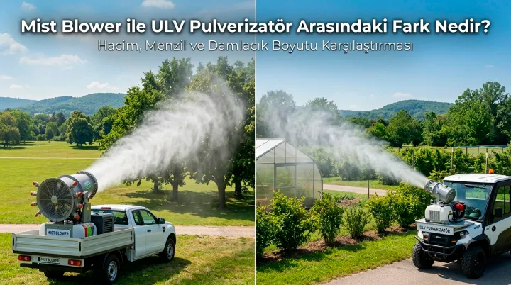
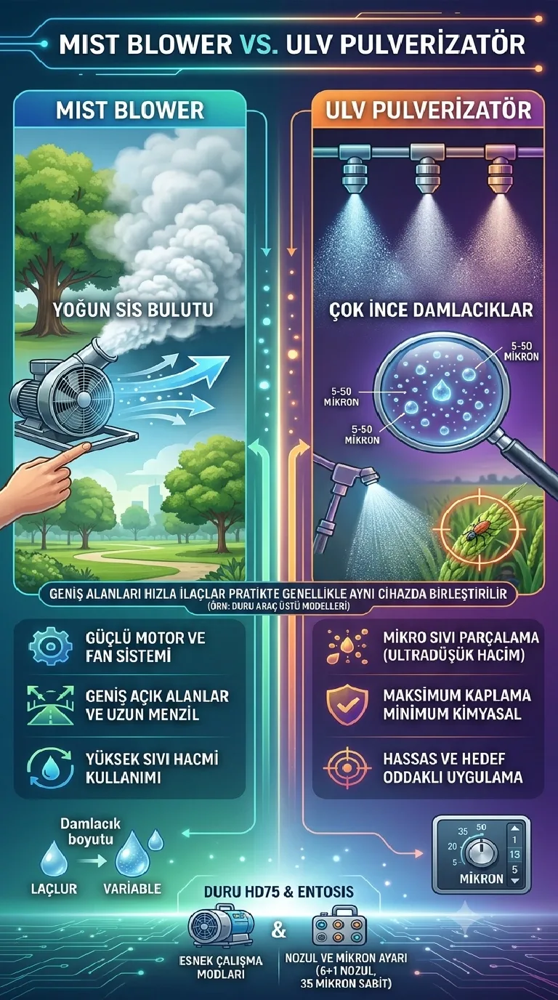

Mist Blower Nedir?
Mist blower nedir sorusu, özellikle araç üstü ilaçlama ekipmanı arayan belediye ve tarım işletmeleri tarafından sıkça soruluyor. Mist blower, güçlü bir motor ve fan sistemiyle ilaç veya dezenfektan sıvısını yüksek hızda hava akımına karıştırarak yoğun bir sis bulutu halinde geniş alanlara püskürten bir makine türüdür. Genellikle araç üzerine monte edilerek kullanılan mist blower cihazları, ağaçlık alanlar, parklar, uzun menzilli bölgeler ve geniş arazilerin hızlı ilaçlanmasında tercih edilir.

ULV Pulverizatör Nedir?
ULV pulverizatör ise, sıvıyı çok daha ince (genellikle 5-50 mikron arası) damlacıklara ayırarak, daha düşük hacimde ilaç kullanarak geniş bir alanı kaplayan bir sistemdir. Pulverizatör terimi, sıvıyı toz haline getirme/parçalama işlemini ifade eder; ULV pulverizatör bu işlemi "ultra düşük hacim" prensibiyle, yani mümkün olan en az kimyasalla en geniş alanı kaplayacak şekilde gerçekleştirir.
Mist Blower ile ULV Pulverizatör Arasındaki Temel Farklar
Pratikte bu iki sistem genellikle aynı cihazda birleştirilir — örneğin Duru'nun araç üstü modelleri hem mist blower hem ULV hem de pulverizatör modunda çalışabilir. Ama kavramsal olarak farkları şöyle özetlenebilir:
- Damlacık boyutu: Mist blower genellikle daha geniş bir damlacık aralığında çalışırken (yoğun sisleme), ULV pulverizatör çok daha ince ve hassas damlacıklar üretir. - Hacim kullanımı: Mist blower daha yüksek hacimde sıvı kullanabilirken, ULV prensibi düşük hacimde, yoğunlaştırılmış ilaç kullanımını önceliklendirir. - Uygulama amacı: Mist blower, geniş açık alanların (orman, park, tarım arazisi) yoğun sislenmesi için daha çok tercih edilirken, ULV pulverizatör daha hassas, hedefli ve ekonomik uygulamalar için kullanılır. - Menzil: Güçlü mist blower sistemleri, fan gücü sayesinde daha uzun menzile ilaç gönderebilir; bu da geniş arazilerde avantaj sağlar.
Hangi Sistem Hangi Durumda Tercih Edilmeli?
Eğer ihtiyacınız geniş bir araziyi (park, mesire alanı, tarım arazisi) kısa sürede yoğun şekilde ilaçlamaksa, güçlü bir mist blower sistemi öne çıkar. Eğer öncelikli hedefiniz ilaç tasarrufu, ekonomik kullanım ve hassas mikron ayarıyla optimize edilmiş bir uygulama ise, ULV pulverizatör modu daha uygun olabilir. Duru'nun araç üstü ilaçlama makineleri kategorisindeki modeller (örneğin Entosis Mist Blower veya Duru HD75), bu iki çalışma modunu tek bir cihazda birleştirerek, operatöre saha koşullarına göre seçim yapma esnekliği sunar.
Teknik Detaylar: Nozul ve Mikron Ayarının Rolü
Hem mist blower hem de ULV pulverizatör sistemlerinde, nozul sayısı ve mikron ayarı performansı doğrudan etkiler. Daha fazla nozul, daha geniş ve homojen bir kaplama alanı sağlarken, ayarlanabilir mikron çapı operatörün hedef haşereye veya uygulama amacına göre damlacık boyutunu optimize etmesine imkân tanır. Örneğin Duru'nun araç üstü modellerinde 6+1 nozul yapısı ve 35 mikron sabit damlacık çapı, hem yoğun sisleme hem de hassas püskürtme arasında esneklik sağlar.
